Unit 3: Mass and Force Concepts
Readings from Stuart and Gonzales, Chapter 3
2025-04-13
(\(\S 3.1\)) Continuum Bodies (Session 9)

- What is the notion of a continuum? (ask chat AI)
- In this context define density of a material, \(\rho\) (units in mass/volume)
- We identify the placement of a material body as an open subset \(\mathcal{B}\) of Euclidean Space \(\mathbb{E}^3\)
- The placement of a body may change in time, i.e. \(\mathcal{B}=\mathcal{B}(t)\), under the effect of external factors.
- Study of the relationship between the change in placement and external factors, is called continuum mechanics.
(\(\S 3.2\)) Volume and Mass
- The mass of the body is distributed continuously throughout its volume.
- The volume of an arbitrary open subset \(\Omega\) of \(\mathcal{B}\) is \[\mathrm{vol}[\Omega] = \int_\Omega dV.\] where \(dV\) denotes an infinitesimal volume element at \(\boldsymbol{x}\in\Omega\).
- Let there be a mass density field per unit volume \(\rho:B\to\mathbb{R}\) such that \[\mathrm{mass}[\Omega] = \int_\Omega \rho(\boldsymbol{x})dV.\]
(\(\S 3.2.2\)) Centers of Volume and Mass
- By the center of volume of an open subset \(\Omega\) of \(\mathcal{B}\) we mean the point \[\boldsymbol{x}_\mathrm{cov} = \frac{1}{\mathrm{vol}[\Omega]} \int_\Omega \boldsymbol{x} dV.\]
- This integral is known as the first moment of volume about \(O\).
- By the center of mass of an open subset \(\Omega\) of \(\mathcal{B}\) we mean the point \[\boldsymbol{x}_\mathrm{com} = \frac{1}{\mathrm{mass}[\Omega]} \int_\Omega \boldsymbol{x} \rho(\boldsymbol{x}) dV.\]
(\(\S 3.3\)) Body Forces
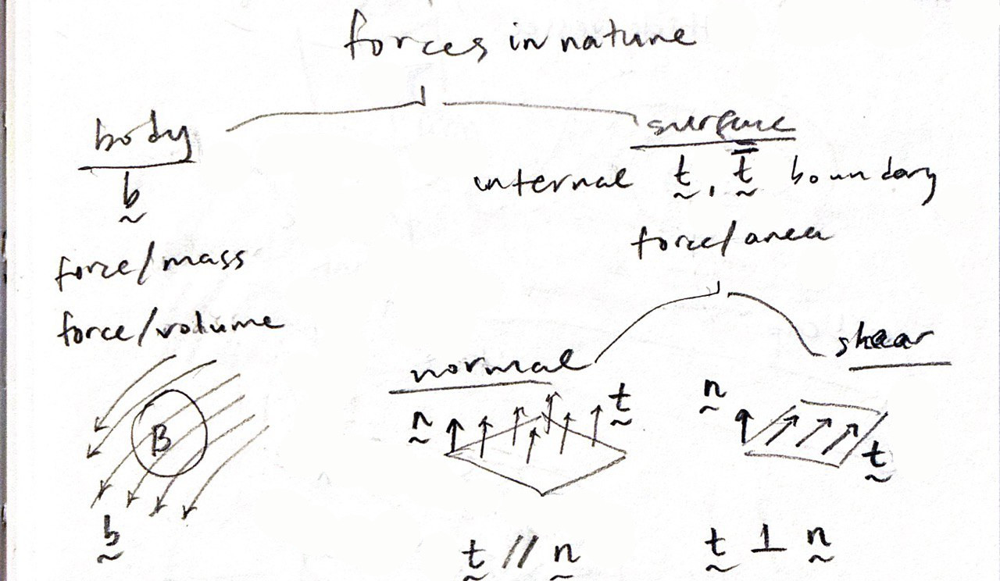
- How do body forces arise from distant effects such as gravity, electromagnetism?
(\(\S 3.3.1\)) Body Forces and their Resultants (Integrals)
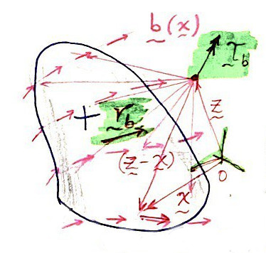
- Let, \(\boldsymbol{b}(\boldsymbol{x}):\mathbb{E}^3 \to \mathcal{V}\), denote any force field that does not arise from physical contact (between bodies).
- Example: gravity, \(\boldsymbol{g}\) (has units of m/s\(^2\))
- It is usually measured in terms of the force field per unit mass (i.e. force/mass)
- Let \(\Omega\) be an open volume in \(\mathcal{B}\), then, the resultant force accumulating in \(\Omega\) due to \(\boldsymbol{b}\) is \[\boldsymbol{r}_b[\Omega] = \int_\Omega \boldsymbol{b}(\boldsymbol{x}) \rho(\boldsymbol{x}) dV,\]
- and the resultant torque about a point \(\boldsymbol{z}\) can be written as \[\boldsymbol{\tau}_b[\Omega,\boldsymbol{z}] = \int_\Omega (\boldsymbol{x} - \boldsymbol{z}) \times \boldsymbol{b}(\boldsymbol{x}) \rho(\boldsymbol{x}) dV.\]
Questions for next session
Ask AI:
- In which ways do the surface forces differ from the body forces?
Deliverables
Students should be able to:
[ ]use density to find continuum mass and center of mass
(\(\S 3.3.2\)) Surface Forces (Session 10)
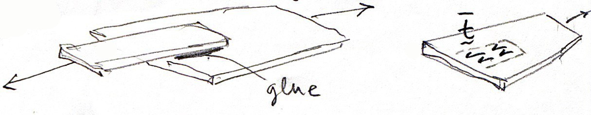
- How do surface forces, a.k.a. tractions arise from the mutual interaction (contact) between a pair of bodies?
- Contact occurs over the boundary of \(\mathcal{B}\), i.e. \(\partial\mathcal{B}\), boundary tractions are labeled \(\bar{\boldsymbol{t}}\).
Definitions
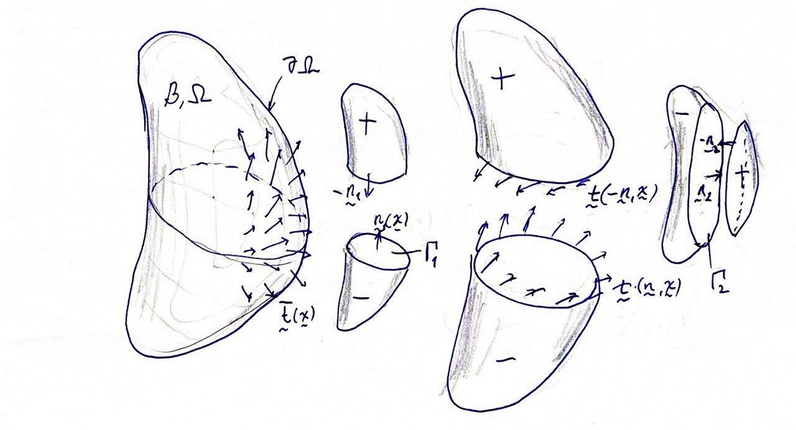
- \(\Gamma\) denotes the area projected by \(\mathcal{B}\) over a plane with normal \(\boldsymbol{n}\)
- It separates \(\mathcal{B}\) into the (\(-\)) and a (\(+\)) sides.
- The force, per unit area, exerted by the (\(+\)) side of \(\Gamma\) upon the (\(-\)) side is the traction function, \(\boldsymbol{t} (\boldsymbol{n}, \boldsymbol{x}): \mathcal{N} \times \mathcal{B} \to \mathcal{V}\).
- When the \(\Gamma\) is part of \(\partial\mathcal{B}\), tractions become the boundary tractions, \(\boldsymbol{t} = \bar{\boldsymbol{t}}\).
- The tractions at a point \(\boldsymbol{x}\) and over opposite faces of \(\Gamma\) are equal but have opposite signs, i.e.: \(\boldsymbol{t} (\boldsymbol{-n}, \boldsymbol{x}) = - \boldsymbol{t} (\boldsymbol{n}, \boldsymbol{x})\)
Example 1: Balance of Tractions in an Axial Bar
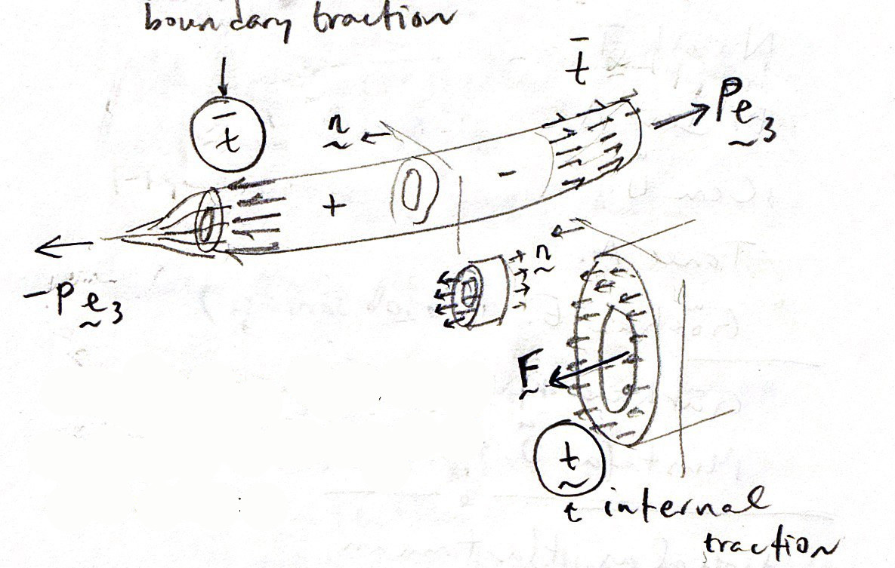
A fundamental problem is to determine the traction distribution over the contact interface.
Other motivations:
- How do the surface shear tractions applied at the ends gradually dive into the body and become normal tractions?
- How can the resultant of the internal normal tractions be computed?
Resultant Force and Torque (Integrals)
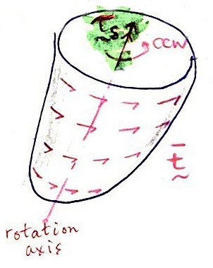
- Similar to the integrals of body forces we define the resultant force due to a traction field as \[\boldsymbol{r}_s[\partial\Omega] = \int_{\partial\Omega} \bar{\boldsymbol{t}} dA,\]
- and the resultant torque about point \(\boldsymbol{z}\) as \[\boldsymbol{\tau}_s[\partial\Omega,\boldsymbol{z}] = \int_{\partial\Omega} (\boldsymbol{x} - \boldsymbol{z}) \times \bar{\boldsymbol{t}} dA.\]
Why care about the torque?
Consider equilibrium for the models below …
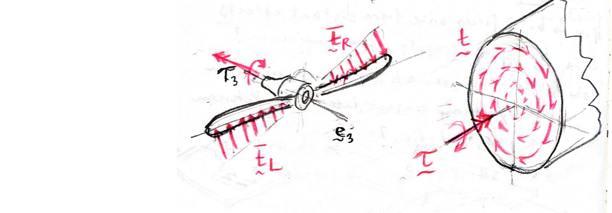
\[\int_{\partial\mathcal{B}} \bar{\boldsymbol{t}} dA = \int_{\partial\mathcal{B}_L} \bar{\boldsymbol{t}}_L dA + \int_{\partial\mathcal{B}_R} \bar{\boldsymbol{t}}_R dA = \boldsymbol{0} \hspace{4em} \quad \quad \int_\Gamma \boldsymbol{t} dA = \boldsymbol{0}\]
- Zero net force in both cases.
- How can the rotation tendency under zero net force be explained?
Example 2: Balance of Tractions in a Pressurized Vessel
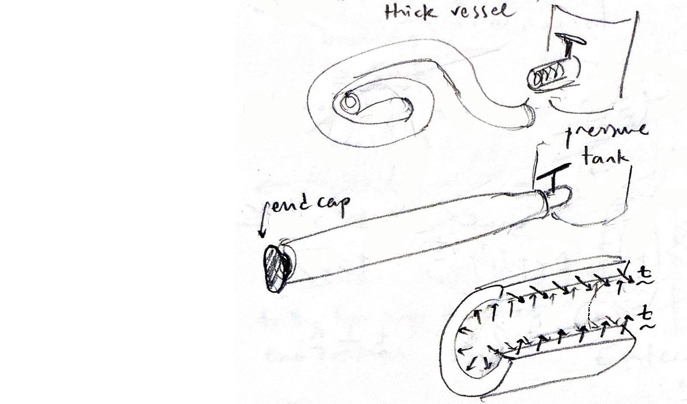
Another fundamental problem is to determine the internal tractions resulting from the applied boundary tractions.
Further questions:
- Is there a coordinate system (alternative to Cartesian) which would be more suitable for this (cylindrical) problem? \(\{1,2,3\} = \{r,\theta\,z\}\)
- How is the internal pressure related with boundary tractions? \(\bar{\boldsymbol{t}} = -p\,\boldsymbol{e}_r\)
- Visualize the internal wall tensions that are expected in radial planes: \(\boldsymbol{t} = t\,\boldsymbol{e}_\theta\)
Questions for next session
Ask AI:
- How is the definition of the stress tensor related with the internal tractions?
Deliverables
Students should be able to:
[ ]differentiate surface and body forces[ ]provide an example to the surface traction vector
(\(\S 3.3.3\)) The Stress Tensor (Session 11)
- The internal tractions can be assembled to define the concept of stress in a body
- Stress is a second-order tensor
Cauchy’s Stress Tetrahedron
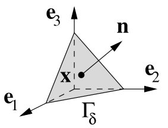
- Visualize a tetrahedron in \(\mathcal{B}\) with three of its faces normal to \(\boldsymbol{e}_i,\;i=1,2,3\), and its fourth face normal to unit vector \(\boldsymbol{n}\).
- The internal traction vector on the plane with unit normal \(\boldsymbol{n}\) is \(\boldsymbol{t} (\boldsymbol{n}, \boldsymbol{x})\)
- The internal traction vectors on the coordinate planes having normals \(-\boldsymbol{e}_j\) are \(\boldsymbol{t} (-\boldsymbol{e}_j, \boldsymbol{x})\)
- By extending the arguments of force equilibrium the above tractions can be shown to obey \[\boldsymbol{t} (\boldsymbol{n}, \boldsymbol{x}) + \sum_{j=1}^3 \boldsymbol{t} (-\boldsymbol{e}_j, \boldsymbol{x}) n_j = \boldsymbol{0}.\]
Definition
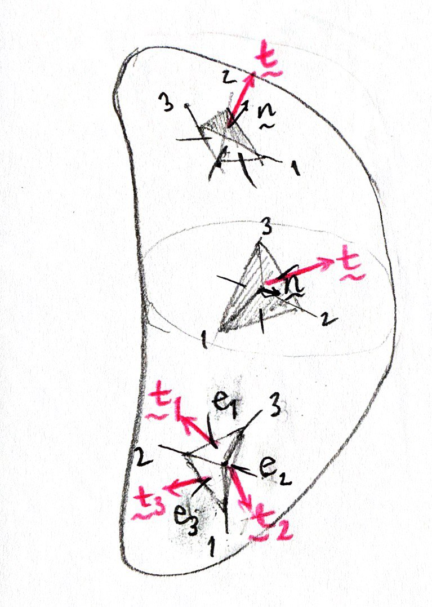
- There exists a second-order tensor field, \(\boldsymbol{\sigma} (\boldsymbol{x}):\mathcal{B} \to \mathcal{V}^2\), called the stress field, which transforms the unit normal field into the traction field as \[\boldsymbol{t} = \boldsymbol{\sigma} \cdot \boldsymbol{n} \quad \mathrm{or} \quad t_i = \sigma_{ij} n_j\] where \(\sigma_{ij} = t_i(\boldsymbol{e}_j, \boldsymbol{x})\)
- the stress component \(\sigma_{ij}\) corresponds to the \(i^\mathrm{th}\) component of the traction on the plane with normal \(\boldsymbol{e}_j\)
- The diagonal and off-diagonal components are termed as, normal and shear stresses, respectively.
(\(\S 3.5.1\)) Simple States of Stress
- Hydrostatic (Spherical) Stress
- Uniaxial State of Stress
- The State of Pure Shear
Hydrostatic (Spherical) Stress
- A state of stress at a point \(\boldsymbol{x}\) is said to be spherical if \[\boldsymbol{\sigma} = -p \boldsymbol{I}, \quad \mathrm{or} \quad \sigma_{ij} = -p \, \delta_{ij},\] where \(p\) denotes the hydrostatic pressure. Note that, compressive pressures are taken as (\(-\)) while expansive pressures are (\(+\)).
- For this state of stress, we find the tractions on any surface with normal \(\boldsymbol{n}\) at \(\boldsymbol{x}\) is given by \[\boldsymbol{t} = \boldsymbol{\sigma} \boldsymbol{n} = -p \boldsymbol{n} \quad \mathrm{or} \quad t_i = -p \,n_i.\]
Uniaxial State of Stress
- The state of stress at a point \(\boldsymbol{x}\) is said to be uniaxial if \[\boldsymbol{\sigma} = \sigma\,\boldsymbol{\gamma} \otimes \boldsymbol{\gamma} \quad \mathrm{or} \quad \sigma_{ij} = \sigma \,n_i\,n_j,\] where \(\boldsymbol{\gamma}\) is a unit vector that denotes the axis of loading and \(\sigma\) is the stress magnitude.
- For a uniaxial stress state the traction on any surface with normal \(\boldsymbol{n}\) at \(\boldsymbol{x}\) is given by \[\boldsymbol{t} = \boldsymbol{\sigma} \boldsymbol{n} = (\boldsymbol{\gamma} \cdot \boldsymbol{n}) \sigma \boldsymbol{\gamma} \quad \mathrm{or} \quad t_i = (\gamma_j n_j) \sigma \gamma_i\] Notice that no matter in which direction \(\boldsymbol{n}\) points, the traction is always parallel to \(\boldsymbol{\gamma}\).
The State of Pure Shear
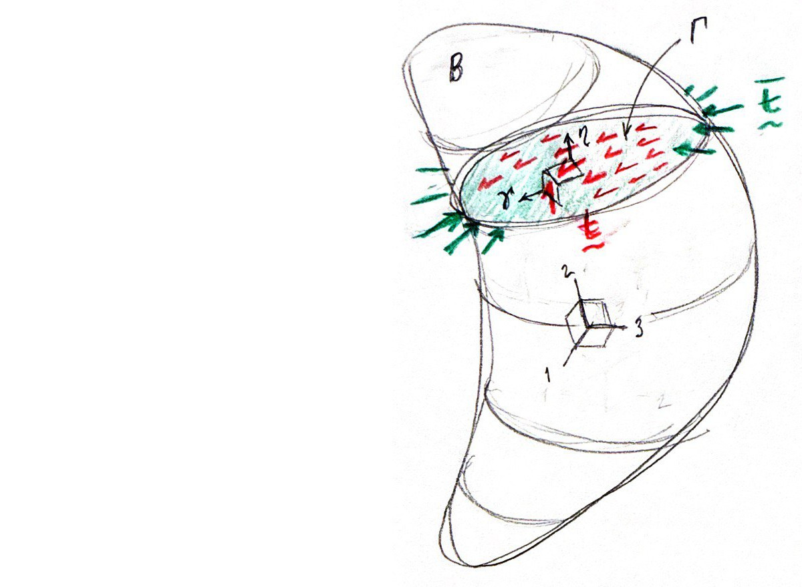
- If at a point \(\boldsymbol{x}\) there exists a pair of orthogonal unit vectors \(\boldsymbol{\gamma}\) and \(\boldsymbol{\eta}\) and a scalar \(\tau\) such that \[\boldsymbol{\sigma} = \tau (\boldsymbol{\gamma} \otimes \boldsymbol{\eta} + \boldsymbol{\eta} \otimes \boldsymbol{\gamma}) \quad \mathrm{or} \quad \sigma_{ij} = \tau (\gamma_i \eta_j + \gamma_j \eta_i),\] we say that a state of pure shear exists.
- For this stress state the traction on any surface with normal \(\boldsymbol{n}\) is given by \[\boldsymbol{t} = \boldsymbol{\sigma} \boldsymbol{n} = (\boldsymbol{\eta} \cdot \boldsymbol{n}) \tau \boldsymbol{\gamma} + (\boldsymbol{\gamma} \cdot \boldsymbol{n}) \tau \boldsymbol{\eta} \quad \mathrm{or} \quad t_i = (\eta_j n_j) \tau \gamma_i + (\gamma_j n_j) \tau \eta_i.\]
Questions for Next Session
Ask AI:
- What global conditions on body and surfaces forces are necessary, for a continuum body to remain stationary?
Deliverables
Students should be able to:
[ ]relate the surface traction vector and the stress tensor[ ]provide examples of simple states of stress
(\(\S 3.4\)) Equilibrium Conditions (Session 12)
- What global conditions on body and surfaces forces are necessary for a continuum body to remain stationary?
- What is the Gauss’s (divergence) theorem?
- How are the local conditions on body and surface forces obtained from the global ones?
(\(\S 3.4.2\)) The Global Resultants
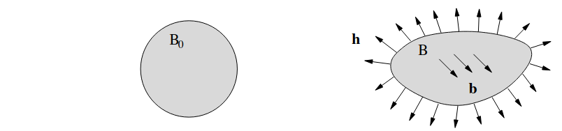
- Let \(\mathcal{B}\) be a body under external forces whose undeformed shape is \(\mathcal{B}_0\) and let \(\bar{\boldsymbol{t}}:\partial\mathcal{B} \to \mathcal{V}\) be the traction field acting on it’s bounding surface.
- The resultant force on \(\mathcal{B}\) due to body and surface forces is \[ \boldsymbol{r}[\mathcal{B}] = \boldsymbol{r}_b[\mathcal{B}] + \boldsymbol{r}_s[\partial\mathcal{B}] = \int_\mathcal{B} \boldsymbol{b}\, \rho\,dV + \int_{\partial\mathcal{B}} \bar{\boldsymbol{t}} \, dA \]
- The resultant torque on \(\mathcal{B}\), about point \(\boldsymbol{z}\), due to body and surface forces is \[ \boldsymbol{\tau}[\mathcal{B},\boldsymbol{z}] = \boldsymbol{\tau}_b[\mathcal{B},\boldsymbol{z}] + \boldsymbol{\tau}_s[\partial\mathcal{B},\boldsymbol{z}] = \int_\mathcal{B} (\boldsymbol{x} - \boldsymbol{z}) \times \boldsymbol{b}\, \rho\,dV+ \int_{\partial\mathcal{B}} (\boldsymbol{x} - \boldsymbol{z}) \times \bar{\boldsymbol{t}}\, dA \]
(Axiom 3.4) Conditions for Stationary Equilibrium
A stationary body will remain stationary (in mechanical equilibrium), IF AND ONLY IF:
- the resultant force \[ \boldsymbol{r}[\Omega] = \boldsymbol{0}, \]
- and the resultant torque about an arbitrary point \[ \boldsymbol{\tau}[\Omega,\boldsymbol{z}] = \boldsymbol{0}.\]
(\(\S 2.3.1\)) Divergence Theorem
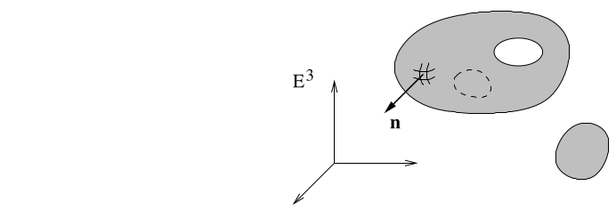
Let \(\mathcal{B}\) denote a regular region in \(\mathbb{E}^3\) with boundary \(\partial\mathcal{B}\). It can be shown using analytical methods that:
- for an arbitrary vector field \(\boldsymbol{v}: \mathcal{B} \to \mathcal{V}\), \[ \int_{\partial\mathcal{B}} \boldsymbol{v} \cdot \boldsymbol{n}\, dA = \int_\mathcal{B} \nabla \cdot \boldsymbol{v}\, dV \quad \mathrm{or} \quad \int_{\partial\mathcal{B}} v_i n_i\, dA = \int_\mathcal{B} v_{i,i}\, dV, \]
- and, for a second order tensor field \(\boldsymbol{S}: \mathcal{B} \to \mathcal{V}^2\) \[ \int_{\partial\mathcal{B}} \boldsymbol{S} \cdot \boldsymbol{n}\, dA = \int_\mathcal{B} \nabla \cdot \boldsymbol{S}\, dV \quad \mathrm{or} \quad \int_{\partial\mathcal{B}} S_{ij} n_j\, dA = \int_\mathcal{B} S_{ji,j}\, dV \]
(\(\S 3.4.3\)) Localization
- The global (integral) condition of (linear) force equilibrium in stationary bodies reads: \[ \int_\mathcal{B} \boldsymbol{b}\, \rho\,dV + \int_{\partial\mathcal{B}} \bar{\boldsymbol{t}} \, dA = \boldsymbol{0}. \]
- It is implied that \(\bar{\boldsymbol{t}}\) over the boundary is equilibrated by the internal traction \(\boldsymbol{t} = \boldsymbol{S} \cdot \boldsymbol{n}\).
- Substituting the internal tractions into the second term, the linear equilibrium equation becomes \[ \int_\mathcal{B} \boldsymbol{b}\, \rho\,dV + \int_{\partial\mathcal{B}} \boldsymbol{S} \cdot \boldsymbol{n} \, dA = \boldsymbol{0}. \]
- But the second term involving the surface integral can be replaced with a volume integral by issuing the divergence theorem, which results in rewriting the linear equilibrium as \[ \int_{\mathcal{B}} (\nabla \cdot \boldsymbol{S} + \rho\,\boldsymbol{b})\, dV = \boldsymbol{0}. \]
- Since the above equation must hold for any arbitrary region \(\Omega\) in \(\mathcal{B}\), we conclude that \[ \nabla \cdot \boldsymbol{S} + \rho \boldsymbol{b} = \boldsymbol{0} \quad \forall\,\boldsymbol{x} \in \mathcal{B}, \] which is known as the local (differential) form of linear equilibrium.
- By a similar argument, the global condition of (angular) torque equilibrium can be used to reveal that \[ \boldsymbol{S}^T = \boldsymbol{S} \quad \forall\,\boldsymbol{x} \in \mathcal{B},\] which is known as the local form of angular equilibrium.
Equations of Equilibrium (in expanded form)
- In [IB:SFAD/15] (\(\S 3.1\)) the equations of equilibrium in a Cartesian frame are provided as \[ \frac{\partial\sigma_{xx}}{\partial x} + \frac{\partial\sigma_{yx}}{\partial y} + \frac{\partial\sigma_{zx}}{\partial z} + \rho g_x = 0 \\ \frac{\partial\sigma_{xy}}{\partial x} + \frac{\partial\sigma_{yy}}{\partial y} + \frac{\partial\sigma_{zy}}{\partial z} + \rho g_y = 0 \\ \frac{\partial\sigma_{zx}}{\partial x} + \frac{\partial\sigma_{zy}}{\partial y} + \frac{\partial\sigma_{zz}}{\partial z} + \rho g_z = 0 \]
- Note that this is equivalent to the indicial expression \[ \sigma_{ji,j} + \rho b_i = 0 \] where the body force \(\boldsymbol{b} = \boldsymbol{g}\).
- Sections \(\S 3.3\) and \(\S 3.4\) from [IB:SFAD/15] can be studied within this framework.
Questions for Next Session
Ask AI:
- Briefly describe kinematics in the context of continuum mechanics, to an engineering undergraduate.
Deliverables
Students should be able to:
[ ]write the condition of static equilibrium in global form[ ]apply the divergence theorem to integral forms[ ]obtain the local form of static equilibrium using the divergence theorem